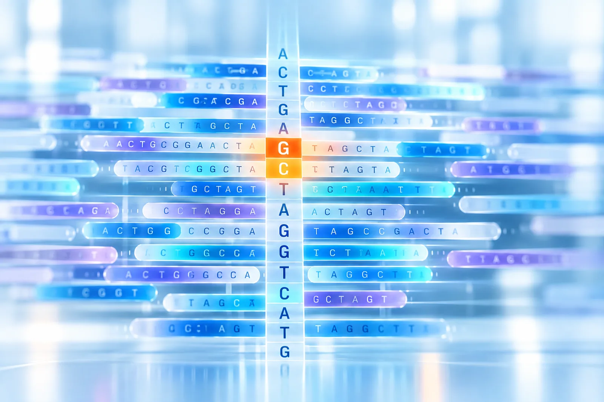

Blood Collection
A peripheral blood draw from the pregnant patient. No procedure risk to mother or fetus.

Our technology
NIFS pairs a single maternal blood draw with First Helix, our patented bioinformatic engine, to screen the fetal exome for thousands of genetic conditions, non-invasively.
The problem, and our solution
Detects only a handful of genetic conditions, missing the majority of clinically relevant variants that affect fetal health.
Amniocentesis and CVS are the only comprehensive options today, but they carry a miscarriage risk and are not broadly used.
The first fetal sequencing test to deliver high-resolution genetic screening at NIPT scale, with no invasive procedure.
How it works
Simple wet-lab workflow, sophisticated bioinformatics, scalable deployment.
A peripheral blood draw from the pregnant patient. No procedure risk to mother or fetus.

Fetal and maternal cell-free DNA is isolated from plasma.
Targeted enrichment of coding regions across the fetal exome.
First Helix calls fetal and maternal variants from the sequencing data.
See this pipeline in motion on our home page .
The engine
A patented algorithm for non-invasive fetal genotyping from maternal plasma cell-free DNA, exclusively licensed to FGI.
One sample. One test. Multiple answers. First Helix simultaneously screens for:
Patented technology
Exclusively licensed to FGI: from raw sequencing reads to a resolved genomic result, in a single automated pipeline.
By the numbers
High-resolution, noninvasive fetal exome screening: every condition below is identified from the same maternal blood draw.
3,151
Autosomal dominant conditions, across 2,649 genes
3,901
Autosomal recessive conditions, across 3,246 genes
434
X-linked conditions, across 269 genes
Closing the gap between safety and coverage
Share of clinically relevant, diagnostic-grade genetic variants each approach can identify.
Modeled coverage of diagnostic-grade genetic variants (aneuploidy, copy-number variants, and autosomal and X-linked conditions) that would otherwise require invasive testing to detect. Invasive testing is comprehensive but carries a miscarriage risk; standard NIPT is non-invasive but limited in scope. Based on FGI's analysis of published assay specifications.
Laboratories, clinicians, investors and researchers: tell us what you're working on.